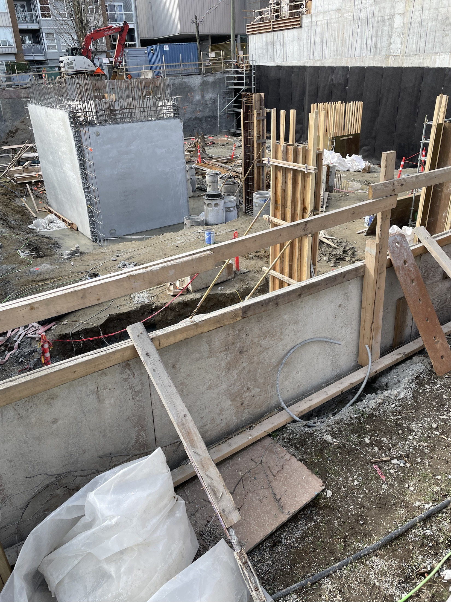
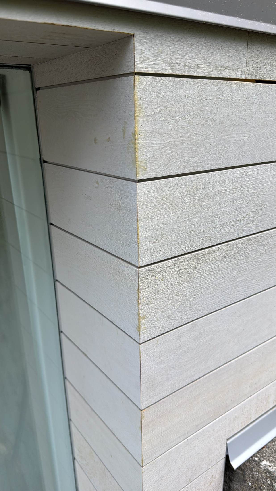
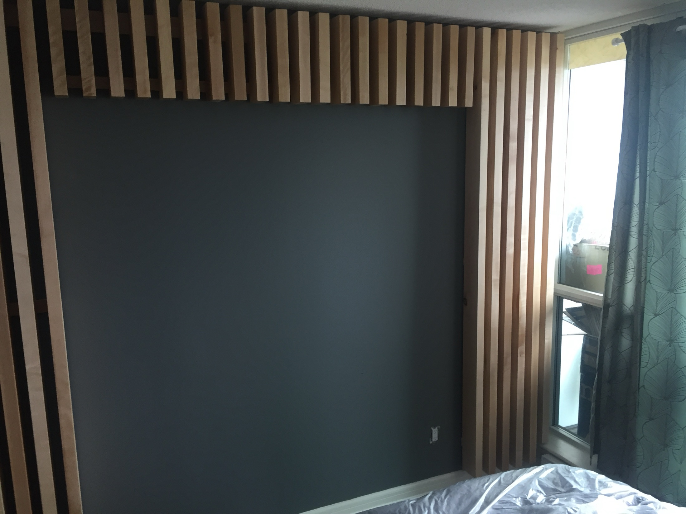
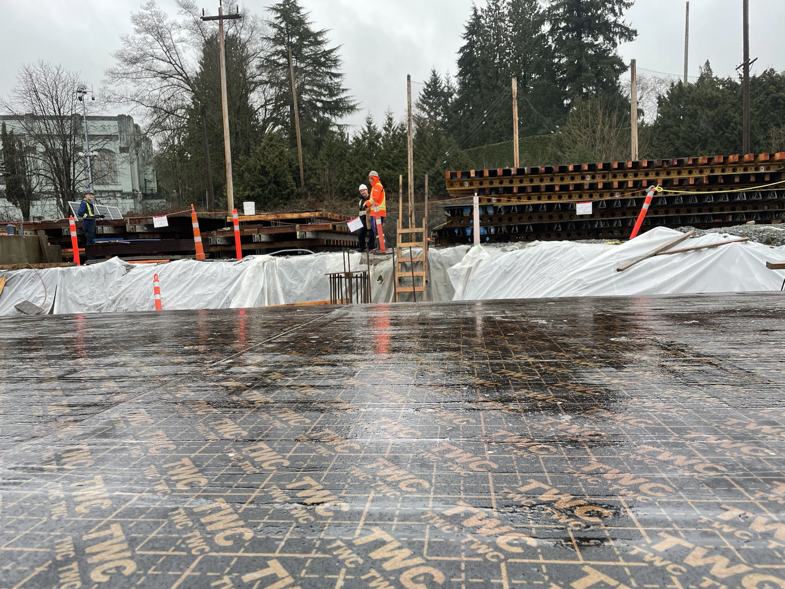
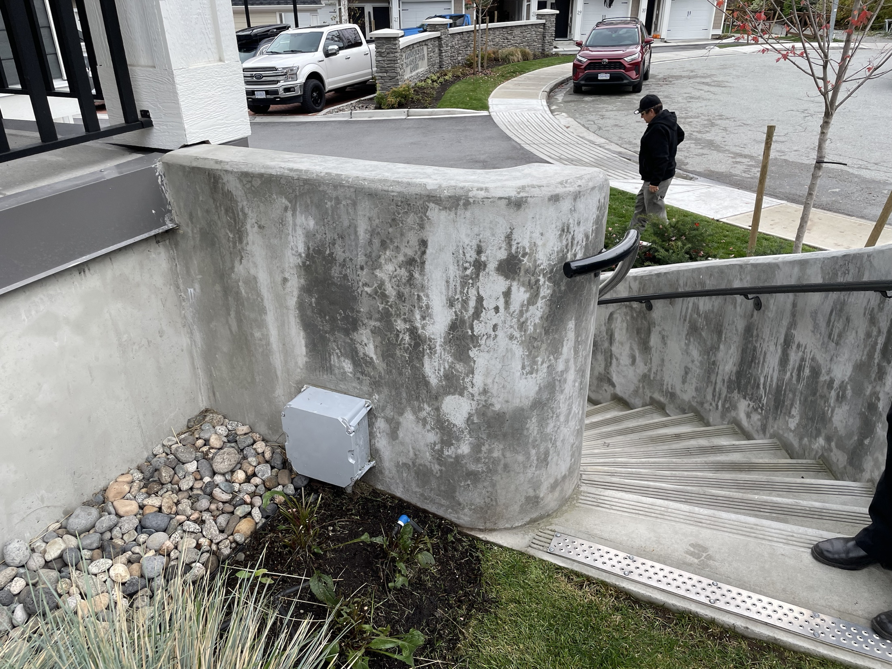
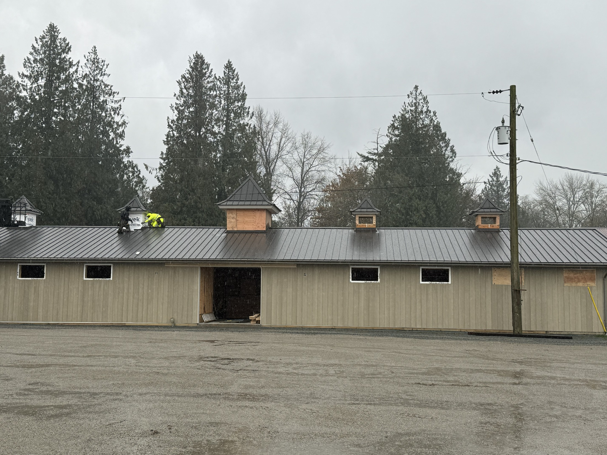

Our Services
Full General Contracting. Master Carpentry.
Whether we're your design-build general contractor running the whole project, or your high-precision carpentry subcontractor, every scope below is led on-site by a Red Seal trade leader.
Get a Free QuoteOur Approach
Design-build, done the way trade leaders would do it themselves.
Renova Design Build works two ways: as the primary design-build general contractor bringing a custom home or renovation from first sketch to final walkthrough — carrying the permitting, budgeting, scheduling, and multi-trade coordination — and as a high-precision carpentry subcontractor embedded inside larger commercial and multi-family developments. In both cases the model is the same — Bill Sr., Bill Jr., and Nicholas are on-site directing the work, not managing it from an office. That's what lets us move fluidly between structural concrete formwork on an urban commercial site, framing an equestrian arena, and fine millwork on a custom residence, often in the same season.



01 · Architectural Finishing
High-End Architectural Finishing
This is where Nicholas's finish-carpentry background shows: mitered cedar siding with true waterfall corners, hemlock soffit ceilings, custom interior trim, open-riser staircases built from solid hardwood, custom slat-wall millwork, and cabinetry fitted to a fraction of an inch. It's the exterior envelope and interior detail work that separates a good build from a photographed one.
The same fine-woodworking eye extends beyond the building envelope — we also build custom furniture and one-off woodworking pieces for clients who want a hand-built finishing touch to match the rest of the home.
Project example: Cove Beach and Lawrence Way — lead carpentry subcontractor for West Coast Turn Key, delivering mitered cedar siding with waterfall corners, hemlock soffit ceilings, and open-riser stairs with glass railings.
See Related Projects →02 · Design-Build
Design-Build & 3D Drafting
Every project starts as a conversation, not a spec sheet. We take a client's vision through in-house 3D modeling in SketchUp, refining layout, massing, and material decisions before a single stamped drawing is issued. Once the design is right, we carry it through structural engineering and permitting so the drawings that reach the job site are buildable, coordinated, and ready for our crews to execute — the same crews who helped design it.
Project example: Nicholas leads 3D CAD/SketchUp drafting across all Renova design-build projects, translating client vision into structural engineer-stamped construction drawings before crews break ground — as on the Lawrence Way custom home, where the hemlock ceiling follows the roofline through skylights exactly as modelled.
See Related Projects →


03 · Architectural Concrete
Architectural Concrete and Formwork
Formwork is where structural integrity is won or lost, and it's the discipline Bill Jr. built his foreman career on. Our crews handle foundations, retaining structures, and large-scale commercial concrete formwork on tight urban job sites — working alongside excavators, structural steel, and tower cranes, to strict site-safety compliance. Every pour is planned to code, supervised on-site, and signed off by a Red Seal carpenter who understands both the concrete and the structure it's carrying.
Project examples: multi-level commercial foundation and column formwork on urban Metro Vancouver sites; and decorative finished concrete, including a curved cast-in-place stairwell wall on a private residence.
Discuss a concrete scope →04 · Heavy Timber
Heavy Timber & Structural Remediation
Large agricultural and commercial timber-frame structures fail in specific, predictable ways — post rot, wall racking, roof sag — and fixing them safely means understanding the load path before you touch a single member. We specialize in structural remediation at scale: replacing posts, rebuilding walls, and reconstructing roof framing on buildings that can't come out of service for long.
Project example: Coast Performance Horses — structural framing for a new riding arena and barn, including three lantern-roof cupolas built on-site and craned into place onto a standing-seam metal roof.
See Related Projects →
05 · Commercial Subcontracting
Commercial & Multi-Family Subcontracting
Large developers need subcontractors who can hold a schedule and a tolerance without daily oversight. We embed crews inside multi-family and commercial builds for wood-frame backing, hardware package installation, and specialized carpentry scope management — coordinated directly with the general contractor's site super, with Renova's own trade leader on-site running the work.
Project example: embedded carpentry and formwork crews on multi-family and commercial developments across Metro Vancouver — plywood backing, threshold and hardware packages, and structural formwork scope, coordinated directly with the general contractor's site superintendent.
Discuss a subcontract scope →
Not sure which service fits your project?
Tell us what you're building and we'll walk you through the right scope, crew, and timeline.
Get a Free Quote